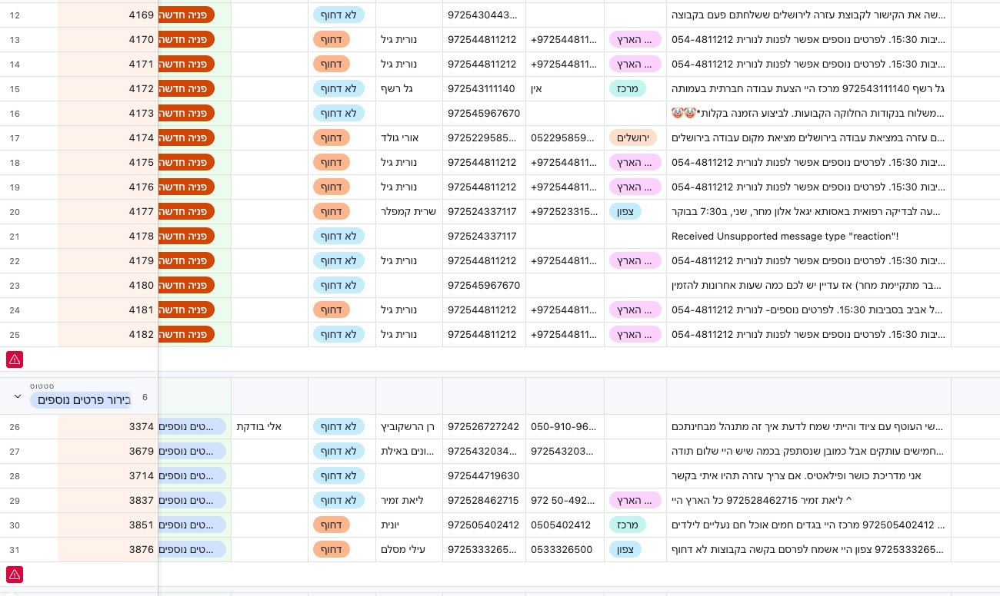
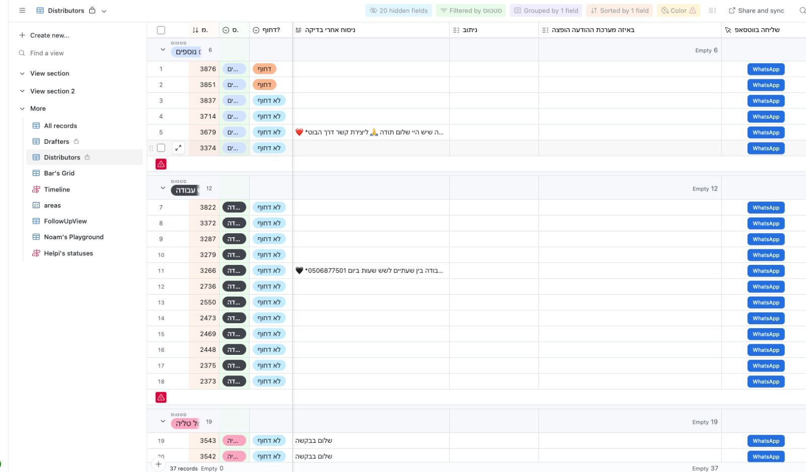
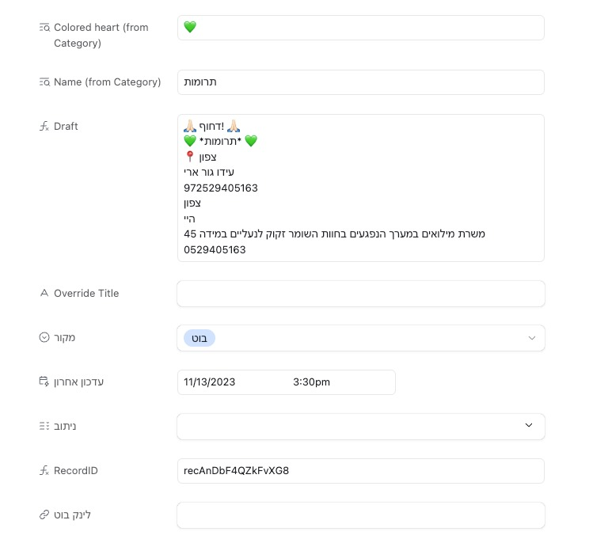
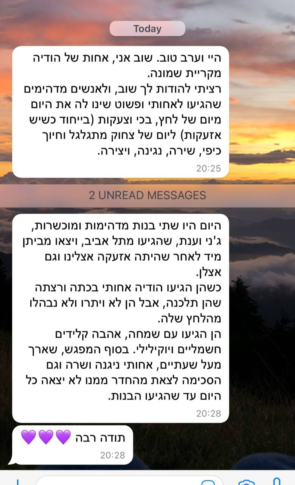

Oct 2023 – Feb 2024
Volunteer coordination system for 10,000+ people — built in days, ran for four months.
On October 7th, we received thousands of requests for assistance, and at the same time, thousands of volunteers approached us with a desire to help. The problem wasn't the number — it was that no system existed to route them. We spent more time managing chaos than helping people. Help arrived slowly. People burned out.
A pipeline where every request had a place to go — automatically. Intake, routing, and follow-up ran without coordinators holding anything in their heads.




Read about Iron Swords in Haaretz (Hebrew)
A wrong message in a crisis causes real harm. Every response was AI-drafted, human-approved.
I cut features that would have made the system more capable but harder to operate without me. By month two, coordinators ran it alone.
Custom software breaks without maintenance. Non-technical coordinators needed to own this completely.
"The system didn't just save time — it saved us from the chaos that would have made us useless."
— Coordinator, Iron Swords volunteer networkAn agent would run the entire intake conversation — asking questions, updating the database, keeping records clean. The LLM would send messages, not just draft them — for routine cases. The human's job shifts to verifying the process works and approving broadcasts to groups. Review exceptions, not routine.
But one thing must never be automated: A human must verify that every person in the system is legitimate and that every request is lawful. No agent, no matter how smart, should bypass this. The system processes data — but a person is responsible for ensuring that data is safe and ethical.
The bottleneck was coordinator attention. An agent removes it almost entirely. But human judgment on safety and legality? That stays human.
Happy to go deeper on the decisions or what I'd do differently.